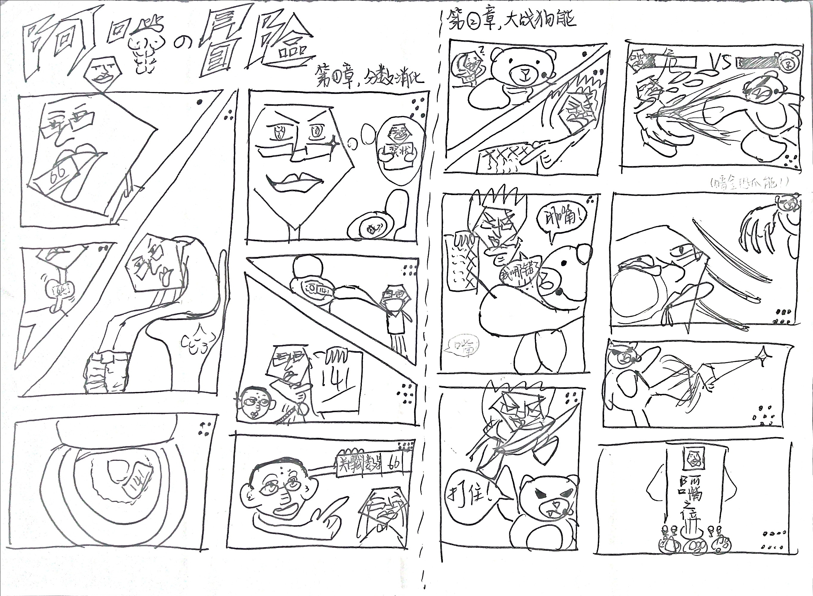
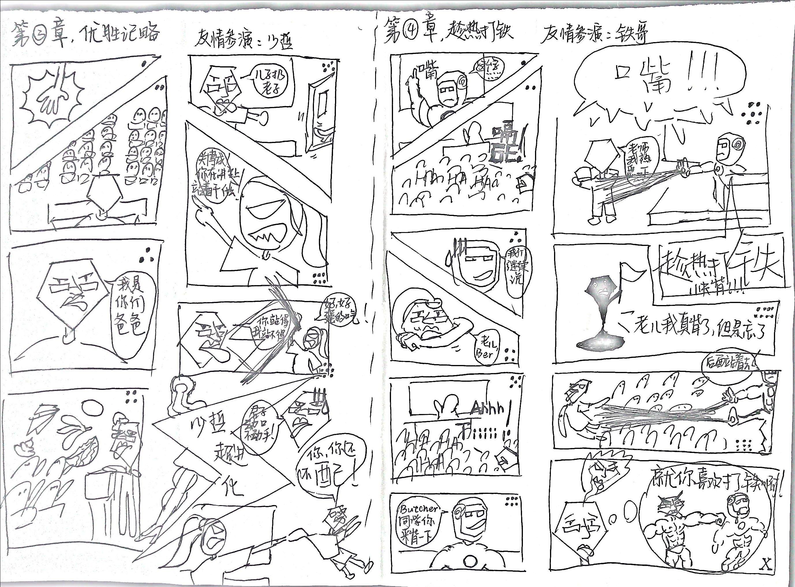

2026/04/20,Fluu正式退出吉林大学ACM队.
Away from ACM,再见.
如果Fluu能有什么感想的话,那就是,别碰ACM.
为什么我不建议任何零基础的人打ACM?
原因1:AI大人已经杀穿了.
很多AI标自己的CodeForces分数,已经能超越绝大多数人类选手了.
超越选手不是什么大问题,至少顶尖人类选手还能一战.
但问题是AI计算速度比人类思考快很多,一发过不去改改,两发,三发…
这就很恐怖了,可以类比锇钨战场上的无人机,一架或许能用散弹枪击落,但如果击落一架后会马上来一个无人机小队彻底火力覆盖这里的话,你还敢轻易打无人机吗?
原因2:很多人高中有OI基础
其次就是因为初高中有信息竞赛,打的好的保送清北.
并不是所有人都在同一起跑线,有的人小学就开始学编程了…
人家可是有备而来…
原因3:如果图保研,Fluu建议打CTF.
而CTF绝大多数人到了大学起跑线都差不多,可能有的人多玩了电脑,有的人搭过自己博客,但这样的人很少,相反有很多人都是ACM转CTF的,例如阮行止,misaka18931.您可以加群”菜菜园子”和”Hackergame2024”然后比较一下这两个群有多少个相同群友就知道了…
那么起跑线近乎相等的情况下,CTF作为技术性比较强而且也是组队打的竞赛,保研加分相对简单很多,Fluu所在的软件只有两个加满分的,是两个打CTF的,一个ACM加满分的都没有,一方面是因为OI牛逼的都去清北了,另一方面是因为吉大OI牛逼的都去唐班了…
原因4:如果图就业,Fluu建议打Kaggle.
据Fluu所知,而且和华为hr也简单核对了一下,本科生打Kaggle的非常少(硕士还是0基础的不建议打任何比赛,找实习吧,别想着靠比赛逆天改命了),几乎清一色硕士生.
而且招偏向AI的岗位Kaggle的重要性不低于ACM,有的岗位甚至高于ACM.
那么这种情况下Kaggle或者天池打了写上去比没写的人就至少强出一截子.
为什么Fluu不反对任何零基础的人打ACM?
不建议不等于反对,至少Fluu打了.
做让自己不后悔的选择就好.
CTF比较冷门的地方就在于他是网安类型的比赛,市场承认度低,网安是一个相对小众的岗位,Fluu问过网安学长说,如果你能接触到网安工业界,你大概率不需要这些竞赛牌子就能找到好工作(人脉.jpg),但如果接触不到,有牌子的意义也没多大…
而且CTF几乎限定网安,而ACM可以随便投(特效西药和广谱中药区别)几乎各种互联网岗,而且加成比较强劲,只要有笔试,只要有手撕,只要有coding那么ACM就有用…
综上,ACM的价值没有以往这么高了,但实在想打还是能打的,只是不建议了,多做做开源项目贡献或者多找找实习比ACM赚的多.
上面聊到ACM了,话说Fluu从未在博客其他地方讲述过自己的文化课与OI史,就在这里一起讲清楚吧…
初中
Fluu在石家庄石门实验学校(现改名为石家庄市第四十八中学)上学,那个时候的Fluu在著名的二班,整个石门最牛逼的班级,班主任叫老赵头(化名).整个年级有30个班,大概1600人,四个重点班,剩下的26个都是普通班.
什么概念?二班出了一个北大,一个浙大,一个东北大学,好像还有去香港读大学的,这还只是Fluu自己不太敢问其他人的去向.
毫无疑问Fluu初中在全班垫底,班主任也有点偏袒女生(不过女生确实太强了,最好的时候年级前10有5个都是二班的,而且很多都是女生),而且因为成绩不行,Fluu在班里也是没什么社交的,有也是垫底的那几个同学.
Fluu哪怕现在回忆,也很好奇,自己是怎么活到现在的,为什么没死在初中…
年级有1600人,Fluu最好就考到了年级172名,平常都是年级600名左右,偶尔年级800都考不进去.
Fluu认为这是因为自己的语文和文综和体育不好,但其他科是没有太大问题的.
(Fluu第一次跑1000米的成绩是6分12秒,体质很烂的,好在疫情把中考的体育取消了,不然Fluu的爆炸成绩能不能上二南还两说)
回归正题,那时候可以选一个叫做”校本课程”的课,然后每周四自习能去上一个半小时的特殊课程.
这个课能自己随便选,涵盖体育,数学,还有一些其他的课程.
Fluu选的是”信息贯通”,完全不知道这就是石门最初的OI队…
当时石门用的书是大蓝书,就是,林厚从的<信息学奥赛一本通>.
似乎就是在这个时候,Fluu和OI结下了梁子.
初一去打NOIP,去秦皇岛燕山大学,人生中第一次去别的学校打比赛.
当时的Fluu完全没有系统训练过,也完全不知道该从哪里开始训练,整天在机房里玩.
然后NOIP普及组打了个省二,其实是很烂的成绩,现在的Fluu随手就能打300分,绝对就省一了.
当然那个时候的Fluu理解力很差,甚至一度认为后续是写计网的,对网络十分向往,例如1
vector<int>vc;
当时Fluu以为这个东西是连接网络用的,感觉非常神奇.
当然后来我们知道这个东西就是一个变长数组,连接网络可以用 socket .
后续也是毫不意外的被踢了,初二的时候石门还有信竞队,不过没有通知Fluu这个课还在开,说白了就是变相被踢了…
Fluu中考的时候理论上是考体育的,Fluu体育很烂只能吃到保底分,但是20年由于某众所周知的病毒,中考那年没有体育,当时Fluu还在感恩那个神秘病毒来着,不然就考不上二南了…
不过现在Fluu想说,二南绝对不是什么好东西,都是董亚娟这个狗害的,不来二南后悔三年,来二南后悔一辈子.
PS:老赵头干过的抽象事
网络上关于这个班主任的传记太少了,就让Fluu补一篇文献吧…
首先说好,Fluu非常尊敬初中的老赵头(这不是叠甲),但是不尊重高中的董老师(虽然但是还是别直接说真名的好).
董老师就是纯拿钱办事,但老赵头感觉人很不错.
鼓瓢
老赵头自称自己焯鼓,不知道赚了多少.
唉,现在Fluu也要趟这趟浑水了,很想找个机会和老赵头交流一下焯鼓心得…
睡觉
老赵头经常盯晚自习的时候睡觉,也很经常晚自习从后门走进来然后看谁在说话.
大青蒜
大概在初二的时候,老赵头趁晚上所有人去吃饭的时候组织学委发动”大青蒜”运动,让学委翻所有人的书桌,学委会检查每一个本子,查看这里面写的是什么东西,然后在晚自习挨个问话.
Fluu没有早恋,只是自己想创作火柴人所以被收了一个本子.
当时老赵头看这个都笑了,好在没什么大事,就是约定毕业的时候还.
然而Fluu的追究是无限期的,毕业真的找老赵头要,老赵头说弄丢了…
草台班子.
大清洗
大概在初三上开学的时候,老赵头组织了一次轰轰烈烈的大清洗活动.
每个人有两次机会,暑假作业没写完的只要被学委发现一本,那就记一次机会,两次机会都用完了还有剩下的没做完的,那就立刻回家,趁家长还没走,返校都不用返,补完再回来.
其实那个时候的Fluu真的没写完,但是非常感谢王一博同学(数学学委)数错了,然后就没回家.
那一晚的宿舍只有Fluu一人,唱的是 alan walker 的 <alone> .
皮豆
Fluu没有串宿舍,Fluu只是在其他人宿舍的门口和别人说了几句话,被宿管抓拍了照片,第二天就被罚蹲一整节课,腿都快废了.
扣分
因为卫生扣分,Fluu被罚跑操场五圈.这个操场可是加上主席台的,有人测过好像是一圈1.2km…
我怎么没死.
神秘卷子
老赵头曾经出过一个考试,这个考试的规则可不简单,大意是这样:
1.你必须顺着做.
2.你可以空题,也可以没时间写,但是你只要做错一道题,就要给我抄10遍连题带答案交上来.
然后Fluu打了108,剩下好像一个大题没时间写了,做过的全对,也是挺感慨世界上还有这种考试的…
神秘检讨
有一周的二班因为放假的时候太过闹腾,年级主任来了一下,然后老赵头非常生气,下令全班写检讨,写不完的不能走.要求非常傻逼,800字算标点不能有涂改,写错一个字就重写,直到写完交上来否则不能放学走.
当时石门的作息是两点半上完两节课之后就能放假收拾东西回家走了,但Fluu拖到六点半才走,天都黑了.
集训
老赵头以整个班为单位,联合隔壁的Jada(英语老师,隔壁1班的班主任)一起搞集中营,寒暑假自己开班加课,60天的假期大概能占42天?每天有额外的课,老赵头和石门其他的老师原班人马带了属于是,然后找几个什么实训基地,全日制包吃包住就开课.
印象中暑假的那一期很成功,但是寒假的第二期的集中营因为疫情烂尾了.
Fluu在这个暑假终于直到了一首非常出名的曲子的名字: friendships .
这个集中营教室的隔壁是跳舞的班,有一个旋律Fluu一直记得,但是不知道叫什么名字,如果很感兴趣的话您不妨听一听:
暴怒
某次老赵头严肃批评了某个同学,这个同学心情不好,然后就把数学卷子撕了,当然这是个人发泄行为,让老赵头得着了,直接暴怒,把这个同学书桌上所有书都摔到这个同学身上,书桌乱作一团,又打又骂感觉有5min左右…
高中
高中上的二南,是有正经信竞队的…
二南有三档班:普通班 重点班 省理班,Fluu是重点班,毫不意外,因为初中的Fluu成绩很烂.
因为打竞赛一定会占用时间,占用时间就一定会影响成绩,所以高中OI队的选拔只在省理班进行,Fluu根本没资格上桌的…
后来到了大概高一下的时候,因为信竞队实在没什么人打了,重点班想去的也可以参加选拔,Fluu因为初中打过,参选后也是毫不意外的入选了,但是Fluu认为影响学习,就没去.
而这,就是Fluu做过的,最大的错误选择,这个后续再聊.
高中全年级大概有2000人,分为a部和b部,每个部20个班,多少个普通多少个省理多少个竞赛就不清楚了.刚来的Fluu第一次月考考了961名,也是不出意外的烂.
Fluu非常清楚,自己的初中纯纯为文综和语文所害,所以才一直起不来,等到选科之后绝对原地起飞,所以初中就选好了一定是物化生,倒是没有什么顾虑.
高一下分科之后也确实没出什么意外,第一次考试大概年级前600?记不太清了,大概就是500到600名的样子,高一的Fluu很喜欢玩,找到了王爷,阿法(Fluu最好的朋友之一,现仍保持联系),潘,玩桌游或者狼人杀.
Fluu有一个绝技,抓苍蝇,从初一就开始练,有着六年的抓苍蝇经验,能徒手活捉苍蝇…
额这个因为观感不是很好,一笔带过吧,反正就是后来用方便面料和各种神秘的液体混了一个”盐瓶”,苍蝇抓进去五秒就不动了,杀伤力很强…
然后高二的时候Fluu被洗脑了,当时坚信内卷就能出人头地,那会的Fluu买了好多教材,然后提前写了好几天的作业,大课间的时候绕着学校跑一圈(大约1.7km,12min跑完,满头大汗,站着上晚自习),正如上文所说,Fluu体育很烂,也很讨厌任何形式的体育运动,但是被洗脑了真的就开始跑步了…
那会的成绩大概能稳住年级前300,但也仅限年级前三百了,从来没有进过年级前100,Fluu真的这就到极限了吗?
并没有.
高二暑假
即将升高三,Fluu整个暑假沉迷原神无法自拔,那个时候的原神活动是第二期的金苹果群岛,就是菲谢尔城堡的活动,非常好玩…
Fluu很喜欢的角色是心海,但当时评测都在说心海是花瓶,所以就没抽…(不过后来神鹤万心是T0级别的队伍,超级牛逼,心海当时风评差感觉只是剧情不行,以及没有适配的队伍)
当时Fluu整天听二泉映月补作业,感觉开学考试自己要完了.
(Fluu最喜欢听高韶青版本的二泉,如泣如诉和Fluu最有共鸣)
高三
开学有一个考试,Fluu在万念俱灰的情况下参加考试,觉得自己要完了,但是出成绩的时候发现自己喜提全班第一,进了高中生涯第一次年级前100(68名),这个成绩是平时Fluu完全不敢想的,就这样大三的Fluu彻底抛弃文科,一味做多理科,当然最后失败了,这个下文再说.
大三的Fluu成绩跟开窍一样,后来每次考试没有跌出年级前200,但也没进年级前100,能稳定全班前10,于是在班里有了很大的话语权,然后就不写语文和英语作业,不写化学作业,老师也不能拿Fluu怎么样,最狠的语文老师不过在语文课的时候让我出去补作业而已,一味的去搞数理化,顶着边际效应做多理科(当时Fluu认为高考数理化会非常难,那么理科好高考就会好).
那么Fluu发现只有摆烂,自己的成绩才能暴涨,于是大三下的时候直接拿手机来学校,每天晚上去厕所玩原神(当然老师是不知道的…),也算是一段辉煌过往了,Fluu的胡桃就是在这段时间抽出来的.(高考结束的时候问老妈,她说其实知道我拿手机的事,还是败露了,但是看在我成绩异常稳定就没管…)
当时的Fluu甚至买了一个二胡和口琴,学着玩(虽然这两个乐器后来全部烂尾了),也算十分抽象了…
那么现在回收第一个伏笔,为什么Fluu大学反而后悔高中没有打OI了呢?
因为当时的Fluu没有意识到后来的自己会凭借摆烂直接开窍,从而获得学业上的极大提升…
Fluu因为高中时期在班里当地头蛇,和班里不少人有过Fluu自己认为很不错的关系,毕竟敢于明面对抗老师的谐星谁不喜欢呢?至少没理由讨厌吧…最关键的是成绩还不赖,严抓有点心疼,不抓又会很难受…
当然Fluu最后的结局不好,因为语文和生物拉分太多了,做多数学计划被边际效应干翻了,所以最后沦落吉大…当然这种条件下复读更是傻逼中的傻逼,时间太宝贵了,能混个985而且不是特别烂的专业已经算不错的了,而且自己确实很喜欢写代码.
不过好在选专业选对了,选的软件工程而不是计科,变相用钱换分了,当初的逻辑是因为很讨厌计算机底层的东西,比如操作系统什么的,所以不想选计科,也就是计算机科学,这个选择误打误撞是对的,因为实际上计科和软件就是学费和分数的区别,专业课反正都是垃圾,没什么区别的.
PS1:二南的抽象事
国庆放假
法定节假日7天二南就放4天,据说有跳楼的.
一时间还有什么”挺进报”张贴在厕所骂二南骂吴进校的,还有去年级办门口撒纸钱的(纸钱其实是Fluu做的…)
进校辞
PS2:Fluu在高中干过的抽象事
Fluu是一个乐子人,会嘲笑他人,当然也会嘲笑自己…
大审判
Fluu高中的班主任叫董老师,即使文理分班了,但Fluu的班主任仍然没变,还是董老师.
Fluu对董老师的评价就是,拿钱办事,Fluu不尊重董老师,但也不会非常批判董老师,至少比起董亚娟这个傻逼,董老师还算可以的.
那么…董老师有一天心血来潮,看到我们宿舍因为卫生问题扣了两分,这两份放平常就啥事没有,但就是那天董老师心血来潮,临时加规则,让宿舍长(Fluu)写一篇检讨,最生草的是还要在全班面前念出来,颇有种杀鸡儆猴的感觉.
那么Fluu不能错过这个大好机会,于是就写了一篇批斗傻逼宿舍扣分制度的文章,然后全班面前念了出来…
直接给董老师干破防了,把Fluu手稿收了之后出班哇哇大哭,笑死我了,然后第二天叫Fluu家长来了哈哈哈哈哈哈哈…
典中典之自己压不住就叫家长,典中典之敌人越反对越说明Fluu作对了.
后续我妈也挺自豪,”我被叫过两次家长”(第一次是什么原因Fluu不太清楚,因为那个时候叫家长没让Fluu知道)
手机…
原神承载了Fluu的整个高中生涯,即使原神很烂Fluu也不会诋毁原神的…
基本上每天中午Fluu会跑到超市买面包和火腿肠,然后500g的面包拆成两天吃,火腿肠吃一半,跑到宿舍就玩原神.
高考前的原神更新到了甘露花海,这个时候原神已经在走下坡路了,Fluu认为甘露花海那个地形实在是太抽象了,完全不能接受,而且花长在悬崖峭壁上,超级难摘.
还记得崩铁刚出的时候Fluu通宵了好几天玩铁,隔壁有个叫姜子煜的也是拿手机玩,我们俩甚至在比进度…(当然最后Fluu高考631坠机了去吉大,姜做多语文成功了,高考642,Fluu大输特输)
也是不意外的一毕业就卸载原神了,不过大学又为了芙芙下了回来,不过还是没活过大一下…
额当然纳塔又下了回来,不过也没玩超过一周…
有点怀念那个时代了,但是想回到那个时代的就是傻逼,毕竟高压,毕竟独裁.
每日一哭?
Fluu的心态超级稳定.
Fluu高中时期每天一定要哭一次,没有什么原因,有的时候写作业就能哭出来,也没有什么原因,如果有那就是avm看多了.
直到这篇文章写作的6202年,Fluu仍会向您诚挚推荐这部永不过时的神作,avm系列.
avm30,Fluu听到ost都会哭,感觉自己像ko(老父亲)一样.
avm ep.30(建议关闭弹幕观看,人很容易被弹幕文字影响…)
Fluu现在也逐步丧失哭的能力了,Fluu感觉这是一件坏事,但是说不出来为什么.
文案与今日份
Fluu高中和一个朋友,笔名坏义,相交甚欢.
当时的Fluu灵感爆棚,想出来很多不像是人能提出来的点子(现在的Fluu也是有很多不像是人能提出来的点子…),然后和别人交流,传纸条嘛,所以起了个名字叫今日份.
Fluu不喜欢写没意义的文章,文笔不好,见谅…
Fluu不喜欢抄歌词,没意义.
Fluu最大的梦想是什么?
原子弹在Fluu头顶上爆炸.
虽然今日份的灵感绝大多数已经失传,不过坏义和鸡哥会画画,您可以看一看当初漫画的图片.


(顺带一提文中的嘴哥还有本子,不过很遗憾这个东西失传了…)
下面分享一篇Fluu曾经写的关于嘴哥的文章:
史记·关嘴列传
关嘴，谥博成，锦州人也，以字行。其文幕瀚，冀州裕华人也。嘴聪颖好学，博闻强志。令和二年，中考出身，师学于石门二中之庠也。是年国庆，闻习三旬而休沐四日，嘴甚不悦，间辱知庠吴进校。进校者，二西知庠也。令和元年擢二南知库。冬，判乡班，徙A12。博成颜黄口宽褒五角面，物皆奇之，议字为嘴。
令和三年十一月，贼子赖舍，封铃结而滞，宿吏不能平。十一日，知部史之才谏添促铃以劝之，奏可。次日，史之才，张丽媛，黄莎，刘立峰伏舍间觇，封铃结，卒掩门而谁何，执十余人。嘴列其中，通报让之，不怿，骂不绝口。或曰”B12班张博轩“者，闯三关而立峰执之，幽于舍，又顷，回家反省。立峰曰”牛逼啊你“”弄死你“，举部振摄，尊为”刘主任“。
令和三年十二月十一日，宿吏扣分便池，嘴坐律抄条。上召崽谕嘴，嘴色眙，忿然曰”吾不服！其乃‘不知者无罪’！“固持不可。上幸舍，令抄之。此所谓”嘴崽之争“。
嘴喜食自嗨锅，每食尽，辄引碗倒脂水于洗脸盆，且自评曰：”吾倒不亦精乎？“其母邮物者亦繁，每电询邮者，嘴曰：”共吾可乐，非无糖者；共吾口香糖，共吾自嗨锅，亦共吾充电宝，室甚洞然，吾其就瞎者……”今和四年五月，教室为学考占，偃而学于舍。读书前，每曰：“卷，就得卷”；顷之则曰：“摆，就得摆。”俄而踱于舍，俄而仰望慕瀚曰：“开摆是吧。”慕瀚曰：“嗟夫！吾无从致书以观！女有不？吾甚爱女。”嘴辄曰：“吾乃女万世之大父也，何子不爱莫大父？”辩而争者无休矣。
还有一篇嘴哥作文,标题很雷人,最后得了45分…所以大家以后把作文分数比45低的叫做“不如种猪”。
争意义行，空虚无事（嘴哥的神秘文章）
……（中间省略一些段落，考试作文嘛）
诸位可见过种猪的面相，双眼污浊空洞，反会在交配时发出光。一生只为欲望而生，最后因欲望而亡。愿诸君，能在生存的条件下，少一些物欲，多一些清雅。要做人类，勿做种猪。
还有一篇嘴哥神秘作文,标题都能写错字的
宁做咬定青山之竹，不当作蚕自缚之蝶（嘴哥某篇作文的神秘标题，原作文标题真的有个错字）
高中毕业
挖坑.
大学
忽然忘记了还有为什么选择打A和为什么最后退役的小作文,需要补一下.